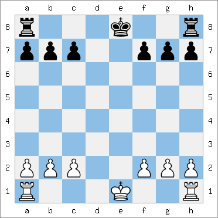
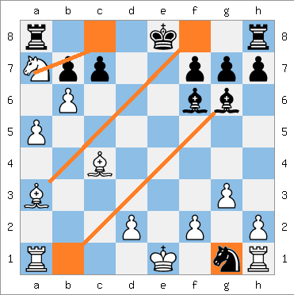

Posición sin enroques

Las blancas se han enrocado en el flanco de rey y las negras en el de dama.
|
Como puedes ver, en cada caso, el rey ha movido dos casillas hacia la torre, y la torre se trasladó a la casilla que el rey había cruzado.
- En el enroque en el flanco de rey, las blancas mueven su rey desde e1 a g1 y la torre desde h1 a f1, y en el enroque en el flanco de dama mueven su rey desde e1 a c1 y la torre desde a1 a d1.
- En el enroque en el flanco de rey, las negras mueven su rey desde e8 a g8 y la torre desde h8 a f8, y en el enroque en el flanco de dama mueven su rey desde e8 a c8 y la torre desde a8 a d8.
|
El enroque sólo es admisible si todos cumplen las siguientes condiciones:
-
Ninguna de las piezas que intervienen en el enroque puede haber sido movido previamente.
-
No debe haber ninguna pieza entre el rey y la torre;
-
El rey no puede estar en jaque, ni tampoco podrá pasar a través de casillas que están bajo ataque por parte de las piezas enemigas. Al igual que con cualquier movimiento, el enroque es ilegal si pusiera al rey en jaque.
Ejemplos
En el diagrama anterior las blancas pueden enrocar en el flanco de Dama (enroque largo) y en el de Rey (enroque corto), las negras pueden enrocar solamente en el flanco de Rey porque la dama está en el espacio del enroque.
En esta posición las blancas no pueden enrocar en el flanco de rey, ya que una de las casillas entre el Rey y la Torre del Rey está ocupada por una pieza, en este caso un Caballo Negro en g1.
Las blancas sí pueden enrocar en el flanco de dama, pues aunque la casilla b1 está controlada por el alfil de g6 el rey no pasa por dicha casilla y por lo tanto sería legal.
Las negras no pueden enrocar en ningún flanco. No pueden hacerlo en el flanco de dama porque la casilla de destino del rey, c8, está controlada por un caballo enemigo desde a7. Tampoco pueden en el flanco de rey, ya que para hacerlo el rey tendría que cruzar la casilla f8 que está controlada por el Alfil de a3.

En el diagrama anterior las negras no pueden enrocar y las blancas sólo pueden en el flanco de rey.
Las negras no pueden enrocar porque su rey está en jaque por el alfil blanco en c6. Si salieran del jaque con la captura del alfil o la interposición de una pieza en d7, podrían enrocar en el futuro. Si salen del jaque moviendo el rey ya no podrán enrocar.
Las blancas no pueden enrocar en el flanco de dama, porque una de las casillas entre el rey y la torre de la dama, b1, está ocupada por una pieza, en este caso, la dama blanca. Sin embargo, las blancas pueden enrocar en el flanco de rey.
|
 ajedrez en el siglo XIV.
ajedrez en el siglo XIV.